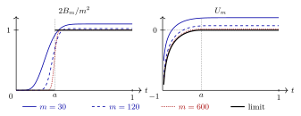

On the Hopf manifold the comparison of section 27.8 can be made completely explicit. A single point pole selects the homogeneous polynomials whose degree in affine coordinates centered at the image point is bounded below, and summing the squared norms of the normalized monomials expresses the kernel as a binomial tail. The exponential rate of this tail determines the limit of the Fubini–Study potentials, and its concentration determines the limit of the measures. The limit potential has a pole along the entire fiber through the original pole, which makes the loss of the point singularity explicit.
We keep the notation of section 27.7.2, with $q=n-1$, so that $\pi :X_ n\to \mathbb P^ q$. Use $L=L_1=\pi ^*\mathcal O(1)$ with its pulled-back Fubini–Study metric and the probability volume $\nu _ X=\omega ^ n/(2n)$, which is the lift of $\sigma ^ q$ for the fiber probabilities $\zeta |_{X_ y}/2$. Let $p\in X_ n$ lie over $b=[1:0:\cdots :0]$. Suppose that $\varphi $ has a single logarithmic pole at $p$, with rational coefficient $0<a<1$, as in (27.25), and is locally bounded elsewhere. The continuous weight is zero. In homogeneous coordinates $[Z_0:\cdots :Z_ q]$ on $\mathbb P^ q$, set
and put $E_ a=e_ a\circ t$ on $\mathbb P^ q$. For $q=1$ this is the function $\Gamma _ a$ of (18.2); here it arises from a point pole on the total space of a fibration. We write $B_{X_ n,m}=B_{m,0,\varphi ,\nu _ X}$ for the partial Bergman kernel.
Proof.
Since $n=q+1$, proposition 27.8.2 identifies the selected space with the space of homogeneous polynomials of degree $m$ on $\mathbb C^{q+1}$ that vanish to order at least $r_ m$ at $b$. For $\ell =(\ell _0,\ldots ,\ell _ q)\in \mathbb Z_{\geq 0}^{q+1}$ write $|\ell |=\sum _ i\ell _ i$ and $Z^\ell =\prod _ iZ_ i^{\ell _ i}$. In the affine chart $Z_0=1$, the vanishing order of $Z^\ell $ at $b$ is $\ell _1+\cdots +\ell _ q$, so the selected space is spanned by the monomials $Z^\ell $ with $|\ell |=m$ and $\ell _1+\cdots +\ell _ q\geq r_ m$.
Distinct monomials are orthogonal, by invariance under the coordinate circle actions. Their squared norms with respect to $\sigma ^ q$ are
To verify this, integrate $|z^\ell |^2\mathrm{e}^{-|z|^2}$ over $\mathbb C^{q+1}$ in two ways. As a product of one-variable integrals it equals $\pi ^{q+1}\prod _ i\ell _ i!$, while in polar coordinates it is the average of $|z^\ell |^2$ over the unit sphere times a radial integral that contributes the factor $(m+q)!$. Dividing by the same computation for $\ell =0$ gives the right-hand side of (27.30) as the normalized sphere average, and the pushforward of the normalized sphere measure to $\mathbb P^ q$ is $\sigma ^ q$, since both are the probability measures invariant under the unitary group. This proves (27.30).
The reciprocal of the squared norm is $D_ mm!/(\ell _0!\cdots \ell _ q!)$. Summing first over the monomials with $\ell _1+\cdots +\ell _ q=j$, the multinomial formula gives the contribution
\[ D_ m\binom mj t^ j(1-t)^{m-j} \]
to the kernel on $\mathbb P^ q$. Since $\nu _ X$ is the lift of $\sigma ^ q$, the norms and kernels lift exactly to $X_ n$, which proves the kernel formula. There are $\binom {j+q-1}{q-1}$ monomials of affine degree $j$, and summing over the excluded degrees $0\leq j<r_ m$ gives $\binom {r_ m+q-1}{q}$. Since $0\leq r_ m\leq m$ and $r_ m/m\to a$, this proves the dimension formula, the nonvanishing and the limit.
$\square$
Theorem 27.9.2. Let $U_ m=m^{-1}\log B_{X_ n,m}$ be the partial Fubini–Study potential for the zero weight. Then
\[ U_ m\longrightarrow E_ a\circ \pi \]
in $L^1(X_ n)$, pointwise as extended-real functions, and locally uniformly off the fiber $\pi ^{-1}(b)$. The normalized kernel measures converge in total variation:
Proof.
Write $P_ m(t)$ for the binomial sum in proposition 27.9.1. For fixed $0<t<1$, $P_ m(t)$ is the probability that a binomial random variable with parameters $(m,t)$ is at least $r_ m$. Its variance is $mt(1-t)$, so Chebyshev's inequality and $r_ m/m\to a$ give
The pushforward of $\sigma ^ q$ under $t$ is $q t^{q-1}\, \mathrm{d}t$. To see this, note that in the affine chart the Fubini–Study measure has radial density $2q r^{2q-1}(1+r^2)^{-q-1}\, \mathrm{d}r$, and $t=r^2/(1+r^2)$. In particular, the level set $\{ t=a\} $ has measure zero. Since $0\leq P_ m\leq 1$ and $q!D_ m/m^ q\to 1$, dominated convergence gives convergence of the densities in $L^1(\sigma ^ q)$, hence in $L^1(\nu _ X)$ after lifting; this is the asserted convergence in total variation. The limit has mass $\int _ a^1 qt^{q-1}\, \mathrm{d}t=1-a^ q$.
\[ \frac{\mathrm{e}^{mH(j/m)}}{m+1}\leq \binom mj \leq \mathrm{e}^{mH(j/m)}\quad (0\leq j\leq m). \]
Indeed, $\binom mj\mathrm{e}^{-mH(j/m)}$ is the $j$th term of the binomial distribution with parameters $(m,j/m)$. It is at most one, and it is at least $1/(m+1)$ because, as the ratio of neighboring terms shows, it is a largest of the $m+1$ terms, which sum to one. For $j=0$ and $j=m$ it equals one.
The logarithm of a sum of at most $m+1$ nonnegative terms differs from the largest of their logarithms by at most $\log (m+1)$. Hence $m^{-1}\log P_ m(t)$ differs by at most $\log (m+1)/m$ from
On compact subintervals of $(0,1)$, uniform continuity and $r_ m/m\to a$ show that these maxima converge uniformly to the maximum of the same expression over $a\leq s\leq 1$. Maximizing in $s$, we find that this maximum is zero for $t\geq a$, attained at $s=t$, and equals the first expression in (27.26) for $t<a$, attained at $s=a$. Thus the limit is $e_ a(t)$, also at $t=a$.
The convergence is also uniform near $t=1$. Choose $c$ with $a<c<1$. The same variance estimate gives $P_ m(t)\geq 1-C/m$ uniformly for $c\leq t\leq 1$ and large $m$, so $m^{-1}\log P_ m\to 0$ uniformly there. Together with the argument on compact subintervals and $m^{-1}\log D_ m\to 0$, this proves locally uniform convergence off $\{ t=0\} $. At $t=0$ we have $r_ m>0$ for large $m$, so $P_ m(0)=0$ and the pointwise limit is $-\infty $.
Finally, $t^ m\leq P_ m(t)\leq 1$, because the term $j=m$ occurs in every binomial sum. Since $m^{-1}\log D_ m$ is nonnegative and bounded, it follows that $\log (t\circ \pi )\leq U_ m\leq C$ off the fiber over $b$. In local submersion coordinates near this fiber, $\log (t\circ \pi )=\log |z|^2+O(1)$, which is integrable against a smooth volume. The pointwise convergence and these bounds give convergence in $L^1$, by dominated convergence.
$\square$

27.1 The one-point model with $q=2$ and $a=1/3$. The normalized kernel density (left) and the Fubini–Study potential (right) are plotted against $t$. The black curves are their limits. The potential panel omits $t<0.01$, where the limit tends to $-\infty $.
The function $E_ a$ is the partial envelope of a point pole on the base. Put $Z'=(Z_1,\ldots ,Z_ q)$ and $\psi _ a=a\log t$ on $\mathbb P^ q$. For $0<a<1$ this function is $\sigma $-plurisubharmonic. Indeed, away from $b$ we have $\sigma +\mathrm{dd}^{\mathrm{c}}\psi _ a=(1-a)\sigma +a\sigma '$, where $\sigma '$ is the semipositive pullback of the Fubini–Study form under the projection $[Z_0:Z']\mapsto [Z']$ (and $\sigma '=0$ if $q=1$); near $b$, the function $\psi _ a$ is $a\log |z|^2$ plus a smooth function, so the positivity extends across $b$.
Proposition 27.9.3. The function $E_ a$ belongs to $\mathrm{PSH}(\mathbb P^ q,\sigma )$, and
Proof.
In the chart $Z_0=1$ put $z=Z'/Z_0$ and $R^2=a/(1-a)$. For $|z|<R$, the local potential of $\sigma +\mathrm{dd}^{\mathrm{c}}E_ a$ is
\[ \log (1+|z|^2)+E_ a =a\log |z|^2-a\log a-(1-a)\log (1-a). \]
Its complex Hessian is semipositive and, away from $z=0$, of rank $q-1$. For $|z|>R$ we have $E_ a=0$, so the form is $\sigma $. The two expressions for $E_ a$ have equal values and equal first derivatives on the sphere $|z|=R$, so they glue to a $C^{1,1}$ function near this sphere, whose distributional Hessian has no part carried by the sphere. Near $b$, $E_ a$ has a logarithmic pole of coefficient $a$. This proves that $E_ a$ is $\sigma $-plurisubharmonic and that $E_ a\sim \psi _ a$.
For the envelope identity, let $w\in \mathrm{PSH}(\mathbb P^ q,\sigma )$ satisfy $w\leq 0$ and $w\preceq _{\mathcal I}\psi _ a$. Since $\psi _ a$ has analytic singularities, lemma 1.17.10 gives $w\leq \psi _ a+C$. Fix a complex line through $0$ in the affine chart. If the restriction of $w+\log (1+|z|^2)$ to this line is identically $-\infty $, there is nothing to prove on the line; otherwise the restriction is subharmonic. On the punctured disk of radius $R$ in the line, subtract $a\log |z|^2$. The difference is subharmonic and, since $w\leq \psi _ a+C$, bounded above near $0$, so it extends subharmonically across $0$. On the boundary circle it is at most $\log (1+R^2)-a\log R^2=-a\log a-(1-a)\log (1-a)$, because $w\leq 0$. By the maximum principle and the formula above, $w\leq E_ a$ on the disk. Every point with $|z|<R$ lies on such a line, and for $|z|\geq R$ we have $w\leq 0=E_ a$. Since $E_ a$ is itself a competitor, it is the envelope. For the continuous obstacle zero, the quasi-everywhere and the pointwise obstacle conditions agree, as recalled in section 1.19.
Off $b$ the local potentials of $\sigma +\mathrm{dd}^{\mathrm{c}}E_ a$ are $C^{1,1}$. By proposition 1.7.4, their Bedford–Taylor top products are given by the determinants of their complex Hessians almost everywhere. By the rank computation, this determinant vanishes where $t<a$, while for $t>a$ the measure is $\sigma ^ q$. The sphere $\{ t=a\} $ has volume zero, and a $C^{1,1}$ local potential puts no mass on it. Finally, the non-pluripolar measure does not charge the point $b$. This proves the measure formula.
For the assertion on $X_ n$, every $\alpha $-plurisubharmonic function has the form $u=w\circ \pi $ with $w\in \mathrm{PSH}(\mathbb P^ q,\sigma )$, by proposition 1.22.3. Since $\varphi $ has analytic singularities, $u\preceq _{\mathcal I}\varphi $ implies $u\preceq \varphi $ by lemma 1.17.10. Restricting this inequality to $\tau =0$ in product coordinates $(z,\tau )$ at $p$ gives $w(z)\leq a\log |z|^2+C$, and hence $w\preceq \psi _ a$ on $\mathbb P^ q$. Conversely, if $w\preceq \psi _ a$, then
near $p$. Away from $p$, the function $\varphi $ is locally bounded and $w$ is bounded above, so by compactness the inequality $w\circ \pi \leq \varphi +C$ holds globally. Thus $w\circ \pi \preceq \varphi $, which implies $w\circ \pi \preceq _{\mathcal I}\varphi $. Since lemma 1.17.10 also applies on the base, the map $u=w\circ \pi \mapsto w$ identifies the competitors on $X_ n$ with the competitors for $E_ a$ considered above. Their largest members therefore correspond under pullback. Finally, theorem 22.2.1 and the measure formula on the base give the last identity.
$\square$
For sufficiently small rational $a$, lemma 1.16.2 gives a function $\varphi \in \mathrm{PSH}(X_ n,\omega )$ whose only pole is at $p$. In particular, theorem 27.9.2 applies on the Hopf threefold $X_3$, which does not have the bounded mass property, and gives a nonzero limit measure with the normalization $2/m^2$. The limit potential $E_ a\circ \pi $ has a pole along the whole elliptic fiber over $b$. At the other points of this fiber $\varphi $ is locally bounded, whereas $E_ a\circ \pi $ has nontrivial multiplier ideals for large weights. Thus, although the sections grow at a positive rate, the limit does not recover the multiplier-ideal type of a selecting potential that is plurisubharmonic only with respect to a Hermitian form.
The limit measure also differs from the Hermitian Monge–Ampère measure of $\varphi $ itself. In the construction of lemma 1.16.2, choose $\varphi $ to vanish outside a small neighborhood of $p$. A neighborhood of another point of the fiber over $b$ is then an open set outside this neighborhood on which $t\circ \pi <a$. There $\varphi =0$, so $\mathrm{MA}^{\mathrm{ext}}_\omega (\varphi )=\omega ^ n$ by locality, whereas the limit of the kernel measures vanishes. The identity in proposition 27.9.3 concerns the envelope $E_ a\circ \pi $, not the selecting potential $\varphi $.
Cite this page
Comments
Corrections, questions, and mathematical discussion are welcome. Sign in with GitHub to comment. Comments are public.
Comments
Corrections, questions, and mathematical discussion are welcome. Sign in with GitHub to comment. Comments are public.